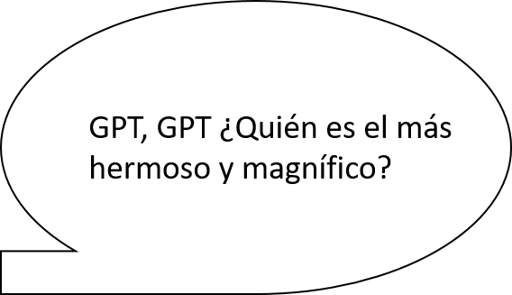
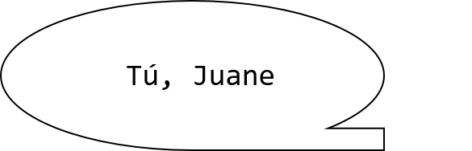

Presentaciones internas: Chatbot factual
Unidad de Gobierno de Datos
30 de octubre 2025
Motivación




El problema de las alucinaciones en LLMs
- Sabemos que los chatbots basados en LLMs tienden a generar información inexacta o “alucinar”
- Además tienden a halagar de más a los usuarios (sicofancia LLM)
- Para usuarios que buscan estadísticas oficiales, esto representa un riesgo significativo
- La confiabilidad de los datos es fundamental en nuestro contexto
Arquitectura
Solución basada en contenedores Docker
Tres componentes principales que interactúan entre sí:
- Open-WebUI: Interfaz de usuario para la interacción con el chatbot
- Ollama: Motor de inferencia para los modelos de lenguaje
- PostgreSQL: Base de datos para almacenamiento persistente

Ollama
¿Qué es?
- Plataforma de código abierto para ejecutar LLMs localmente
- Simplifica su descarga, gestión y ejecución
Características clave
- Soporte para múltiples modelos (Qwen, Llama, Gemma, etc.)
- Gestión automática de memoria y recursos
- Optimizaciones de rendimiento para CPUs y GPUs
- API compatible con OpenAI haciendo fácil su integración
En nuestro proyecto
- Motor de inferencia que procesa las consultas del usuario
- Ejecuta el modelo de lenguaje que interpreta preguntas
- Genera respuestas contextuales basadas en la información disponible
- Se comunica con Open-WebUI a través de su API
Ventajas
- Ejecución local sin dependencia de APIs externas
- Control sobre versiones de modelos
- Latencia reducida al eliminar llamadas a servicios remotos
- Sin límites de uso o costos por token

PostgreSQL
- Ya sabemos qué es PostgreSQL, pero aprovecho de mostrar la estructura de las bases de datos.

- Podríamos quitar columnas para disminuir la complejidad del trabajo de la LLM: debiésemos apuntar a mantener la información mínima posible para que cumpla su tarea con éxito.

Presentaciones internas: Chatbot factual
Unidad de Gobierno de Datos
30 de octubre 2025